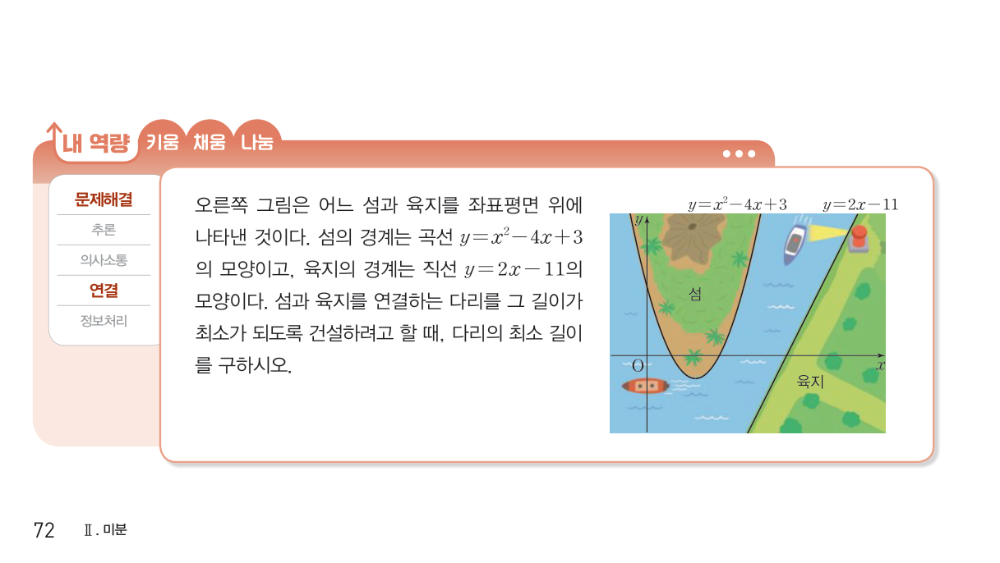

2026학년도 2학기 | 미적분 I
단원 II-1에서 우리는 미분계수 \(f'(a)\)가 곡선 \(y=f(x)\) 위의 점 \((a, f(a))\)에서의 접선의 기울기임을 확인했다. 그렇다면 "접선의 방정식"을 어떻게 한 줄로 쓸 수 있을까?
[개방형 발문] 함수 \(f(x) = -x^2 + 3\)의 그래프 위의 점 \((1, 2)\)에서의 접선을 그려 본 뒤, "기울기 \(m\), 한 점 \((x_1, y_1)\)을 지나는 직선의 방정식"을 떠올려 보고, 미분계수 \(f'(1) = -2\)를 이용하여 접선의 방정식을 직접 써 보자.
[연결] 공통수학 2에서 배운 "점 \((x_1, y_1)\)을 지나고 기울기가 \(m\)인 직선의 방정식: \(y - y_1 = m(x - x_1)\)"에 \((x_1, y_1) = (a, f(a))\), \(m = f'(a)\)를 그대로 대입하면 끝. 오늘은 (1) 접점이 주어진 경우 (2) 기울기가 주어진 경우 (3) 곡선 밖의 한 점에서 그은 접선 — 세 가지 표준 시나리오를 손에 익힌다.
함수 \(f(x)\)가 \(x = a\)에서 미분가능할 때, 곡선 \(y = f(x)\) 위의 점 \((a, f(a))\)에서의 접선의 방정식은 다음과 같다.
\( y - f(a) = \) \( f'(a)(x - a) \)
두 가지 정보: 접선은 ① 지나는 점이 \((a, f(a))\)이고 ② 기울기가 \(f'(a)\). 두 정보를 "점-기울기 공식"에 그대로 꽂으면 끝. "접점 + 미분계수"가 접선의 두 축이다. (비상 미적분 I P.70 · 접선의 방정식 정의 참고)
곡선 \(y = x^2 + x\) 위의 점 \((1, 2)\)에서의 접선을 구해 보자.
3단계 루틴: "도함수 \(\to\) 기울기 \(\to\) 직선식". 점이 곡선 위에 있는지 \(y\)좌표 검증은 보너스 점검. (비상 미적분 I P.70 · 예제 1 참고)
곡선 \(y = -x^2 + x + 5\)에 접하고 기울기가 \(-3\)인 접선을 구해 보자.
발상: "접점을 모르겠으면 매개변수 \(t\)로 두고 조건에서 \(t\)를 결정". 시나리오 ②·③의 공통 도구가 바로 이 "매개변수 접점" 기법이다. (비상 미적분 I P.71 · 예제 2 참고)
점 \((1, 3)\)에서 곡선 \(y = -x^2 + 2x + 1\)에 그은 접선을 구해 보자. 주의: 점 \((1, 3)\)이 곡선 위에 있는지 확인하면 \(-1 + 2 + 1 = 2 \neq 3\) — 곡선 밖의 점이다.
핵심: 곡선 밖의 점에서 그은 접선의 개수 = \(t\)에 대한 방정식의 실근 개수. 일반적으로 이차함수에 곡선 밖 점이면 접선이 2개, 삼차함수에 곡선 밖 점이면 최대 3개가 가능하다. (비상 미적분 I P.72 · 예제 3 참고)
🎯 두 곡선의 공통 접선
두 곡선 \(y = f(x)\), \(y = g(x)\)가 점 \((p, q)\)에서 만나고 공통 접선을 가지면 ① 점이 공통: \(f(p) = g(p) = q\) ② 접선의 기울기 일치: \(f'(p) = g'(p)\). 두 조건을 연립하면 미지수가 결정된다. (비상 미적분 I P.97 · 기본 04번 참고)
접점이 주어진 경우 / 기울기가 주어진 경우 — 표준 공식 적용
곡선 밖의 점 / 두 곡선의 공통 접선 — 매개변수 \(t\) 기법 정착

"틀려야 는다!" 접점이 주어졌는지 vs 곡선 밖 점인지 — 구조 혼동 정면 대응
많은 학생이 "\(x = 0\)이니까 \(f'(0)\)을 그대로 기울기로 쓰면 되는 거 아닌가?"라고 점프한다. 먼저 \((0, 2)\)가 곡선 위에 있는지 검증해야 한다. \(f(0) = -0 + 0 + 4 = 4 \neq 2\) — 곡선 밖의 점이다! 따라서 접점을 매개변수 \(t\)로 두어야 한다.
STEP 1 — 곡선 위/밖 검증: \(f(0) = 4 \neq 2\) \(\Rightarrow\) 점 \((0, 2)\)는 곡선 밖. "곡선 밖의 점 \(\Rightarrow\) 시나리오 ③ (매개변수 \(t\))" 적용.
STEP 2 — 접점 \((t,\ -t^3 + t + 4)\)로 두기: \(f'(x) = -3x^2 + 1\), 기울기 \(f'(t) = -3t^2 + 1\). 접선식: \( y - (-t^3 + t + 4) = (-3t^2 + 1)(x - t) \).
STEP 3 — 점 \((0, 2)\) 대입으로 \(t\) 결정: \(2 + t^3 - t - 4 = (-3t^2 + 1)(0 - t) = 3t^3 - t\) \(\Rightarrow\) \(t^3 - t - 2 = 3t^3 - t\) \(\Rightarrow\) \(-2t^3 = 2\) \(\Rightarrow\) \(t = -1\). 접점 \((-1, 2)\), 기울기 \(-3 + 1 = -2\). 접선: \(y - 2 = -2(x + 1) \Rightarrow y = -2x\). (점 \((0, 2)\) 대입 확인: \(y = 2\) ✓ — 잠깐, \(-2 \cdot 0 = 0 \neq 2\). 다시 계산: 접선 \(y - 2 = -2(x - (-1))\), 즉 \(y = -2x\). 그런데 \((0, 2)\)를 지나려면 \(y\)절편 \(= 2\)여야 함. \(y = -2x + 0\)은 \((0, 0)\)을 지남. 식 점검 필요!)
STEP 3 (재정리): 정확한 식: \(y - (-t^3 + t + 4) = (-3t^2 + 1)(x - t)\)에 \(x = 0\), \(y = 2\) 대입. \(2 - (-t^3 + t + 4) = (-3t^2 + 1)(-t)\) \(\Rightarrow\) \(t^3 - t - 2 = 3t^3 - t\) \(\Rightarrow\) \(-2 = 2t^3\) \(\Rightarrow\) \(t^3 = -1\) \(\Rightarrow\) \(t = -1\). 접점 \((-1,\ 1 + (-1) + 4) = (-1, 4)\). 기울기 \(-3 + 1 = -2\). 접선: \(y - 4 = -2(x + 1) \Rightarrow y = -2x + 2\). 점 \((0, 2)\) 대입: \(2 = 2\) ✓.
STEP 4 — 둘러싸인 넓이: 접선 \(y = -2x + 2\)는 \(x\)축과 \((1, 0)\), \(y\)축과 \((0, 2)\)에서 만남. 둘러싸인 직각삼각형의 넓이 \(= \dfrac{1}{2} \cdot 1 \cdot 2 = 1\). 답: \(1\).
핵심 통찰: "주어진 점이 곡선 위/밖인지 먼저 검증"하는 한 줄 습관이 시나리오 ① vs ③의 분기점. 곡선 밖이면 반드시 접점을 \(t\)로 놓아야 한다. 식 정리 시에는 부호 실수에 매우 주의.
📖 출처: 수능특강 수학Ⅱ · 도함수의 활용 1 · 유제 1 [26009-0075]
난이도 ★★★ (학습지 max+2, 7분) · 핵심: 곡선 위의 점에서의 접선의 기울기 \(=f'(t)\) — 접선식 세우고 외부점 대입으로 미지의 상수 결정
핵심: "곡선 위의 점 \((t,\ f(t))\)에서의 접선이 외부의 한 점 \((p,\ q)\)를 지난다"형 — ① 접선 기울기 \(= f'(t)\) ② 접선식 \(y - f(t) = f'(t)(x - t)\) ③ 외부점 대입 — 차시 12 시나리오 ②(곡선 위의 점에서의 접선)의 정공법. 사차함수도 다항함수이므로 미분 공식이 그대로 적용된다.
📖 출처: 1998학년도 대학수학능력시험 수학영역 나형 9번 [3점]
난이도 ★★★ (학습지 max+2, 7분) · 핵심: 곡선 위의 한 점에서의 접선식을 정확히 세운 뒤 \(x\)절편·\(y\)절편을 구해 좌표축과 만들어지는 삼각형의 넓이를 절댓값으로 정확히 계산
핵심: "곡선의 접선이 좌표축으로 둘러싸는 도형의 넓이"는 평가원·수능에서 반복 출제되는 표준형이다. 절차는 ① 도함수로 기울기 \(\to\) ② 점-기울기 접선식 \(\to\) ③ \(x\)절편·\(y\)절편 \(\to\) ④ \(S = \tfrac{1}{2}|\text{x절편}|\cdot|\text{y절편}|\)의 4단 분해. 차시 12 Level 2~3의 풀이 패턴이 평가원 표준 기출에서 어떻게 출제되는지를 보여주는 대표 사례.
스마트폰으로 우측 QR코드를 스캔하여, 아래 3가지 유형 중 하나 이상을 체크하고 통합 서술형으로 작성해 제출한다.